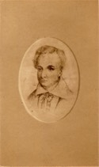

Beaubien-Perrault-Benington - Person Sheet
Beaubien-Perrault-Benington - Person Sheet

NamePhilippe Ignace Francois Aubert De Gaspé93
Birth8 Apr 1814, Québec, Québec20
Death7 Mar 1841, Halifax, Nova Scotia20
Occupationauteur
FatherPhilippe Joseph Aubert De Gaspé (1786-1871)
MotherSusanne Allison (~1795-1847)
Spouses
Unmarried
No Children
Notes for Philippe Ignace Francois Aubert De Gaspé
Journaliste et écrivain. Premier romancier canadien-francais.
Auteur de "Influence d'un livre; roman historique", collaboration de
P.A. de Gaspé, père, Québec, 1837.
[DBC, sur P. A. de Gaspé, père] Eut son père comme précepteur avant
d'entrer au séminaire de Nicolet en 1827. Études interrompues en
1832. Sténographe et journaliste au "Québec Mercury" et au
"Canadien". A la suite d'une altercation avec Dr. Edmund Bailey
O'Callaghan, député de Yamaska qui mettait en doute son intégrité
professionelle, il fut condamné à un mois de prison en 11-1835. En 2-
1836, le turbulent contestataire pour se venger déposa dans le
vestibule de l'Assemblée une bouteille d'assa-foetida qui força les
députés à évacuer le parlement. Il se réfugie au manoir paternel où
il composa son roman, publié en 1837. Le roman fut mal reçu de la
critique. La "Gazette de Québec" concluait que "grand a été le
mécompte des souscripteurs au sujet du salmigondis historico-poétique
de M. de Gaspé." Cette incompréhension totale finit par décourager
le jeune romancier et brisa sa carrière. Par la suite, il alla
chercher fortune à Halifax où il mourut subitement le 7-3-1841,
pendant que son père était emprisonné à Québec.
[Castonguay] Il ecrivit pour "The Times" de Halifax
Auteur de "Influence d'un livre; roman historique", collaboration de
P.A. de Gaspé, père, Québec, 1837.
[DBC, sur P. A. de Gaspé, père] Eut son père comme précepteur avant
d'entrer au séminaire de Nicolet en 1827. Études interrompues en
1832. Sténographe et journaliste au "Québec Mercury" et au
"Canadien". A la suite d'une altercation avec Dr. Edmund Bailey
O'Callaghan, député de Yamaska qui mettait en doute son intégrité
professionelle, il fut condamné à un mois de prison en 11-1835. En 2-
1836, le turbulent contestataire pour se venger déposa dans le
vestibule de l'Assemblée une bouteille d'assa-foetida qui força les
députés à évacuer le parlement. Il se réfugie au manoir paternel où
il composa son roman, publié en 1837. Le roman fut mal reçu de la
critique. La "Gazette de Québec" concluait que "grand a été le
mécompte des souscripteurs au sujet du salmigondis historico-poétique
de M. de Gaspé." Cette incompréhension totale finit par décourager
le jeune romancier et brisa sa carrière. Par la suite, il alla
chercher fortune à Halifax où il mourut subitement le 7-3-1841,
pendant que son père était emprisonné à Québec.
[Castonguay] Il ecrivit pour "The Times" de Halifax